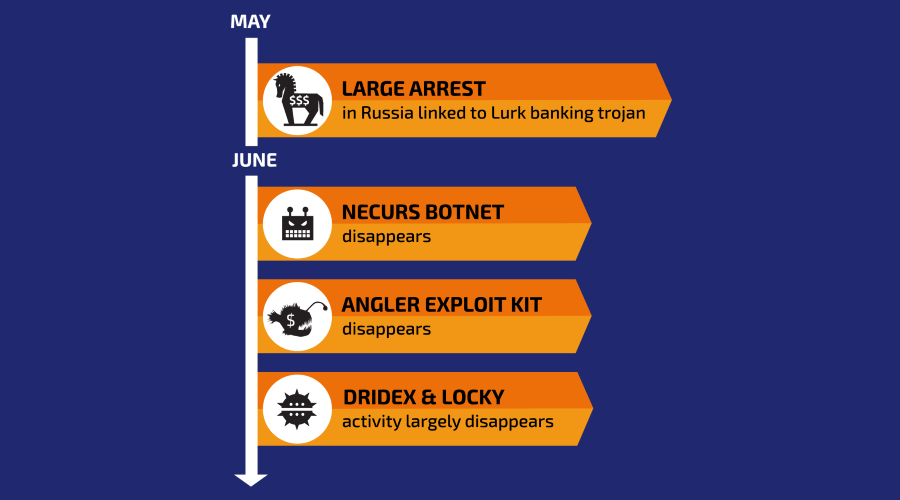

Lurk
| Name | The Lurk Banking Trojan |
|---|---|
| Consequences | It is estimated that the hackers stole over 45 million dollars from banking networks. |
| Date | 2011- June 2016 |
Where did it come from?
The attack was developed, orchestrated, and maintained by Lurk, an organization of Russian cybercriminals. They developed Lurk, along with a hierarchy of money handlers and security features, in order to gradually steal millions of dollars from Russia’s largest banking systems.
How was it caught?
Several measures included by Lurk’s developers helped cover their tracks for several years — Lurk avoided leaving footprints on hard drives by working solely in the RAM of infected computers, included layers of encryption and obfuscation, communicated with control servers registered under fake identities, and constantly changed to adapt to different banking systems. However, by the time that Lurk (the group) had begun selling their Angler exploit kit, the Russian police and Kaspersky Lab were able to compile enough clues from the group’s occasional mistakes to be able to identify and arrest the suspected group members. Kaspersky Lab had been able to identify Lurk’s computer network, and that was enough information for the Russian police to be able to locate and arrest around 50 members of the organization from across the country.
Who/what does it target?
The Lurk Banking Trojan primarily targets Russian financial institutions to steal money from them and their customers.
How does it work?
There were two main components to the Lurk Banking Trojan — the malware itself, a trojan designed to steal money from Russian bank customers, and a series of watering hole attacks and botnets used to distribute the trojan. The trojan would lie dormant, and would only have an impact on the devices where it could steal money, making it much harder to trace. The trojan was able to inject malicious iFrame content into popular Russian websites to exploit flaws in the browser to begin a drive-by download attack. This attack would determine if the computer and user were appropriate targets that could be stolen from. Then, Lurk would load malware onto their appropriate targets, and use it to steal funds from the country’s most common banking systems.

What damage is it capable of doing?
The Lurk Banking Trojan is capable of draining the balances of individuals’ bank accounts. With time, it is able to steal large quantities of money from entire banking networks, but the damages are more significant on the individual level. It targets private financial information, such as account logins.
Has a fix been found? How can we defend ourselves?
After the arrest of around 50 members of Lurk, much of the infrastructure that allowed the Lurk Banking Trojan to run went offline. Although this did not eradicate the virus, it stopped it from spreading and rendered it ineffective by disconnecting it from the network of money mules that it requires. Modern antivirus software are capable of defending against some trojans, but ultimately much of the responsibility comes down to us, the users, who must be sure to keep our browsers and operating systems up to date and to avoid insecure websites that could easily become watering holes.